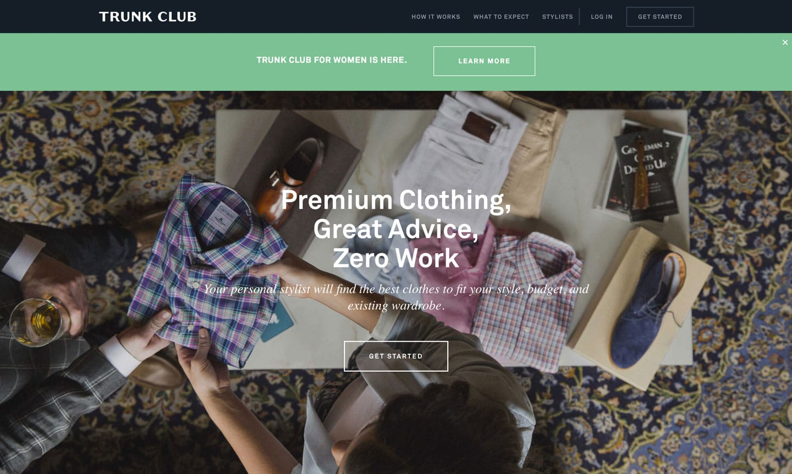
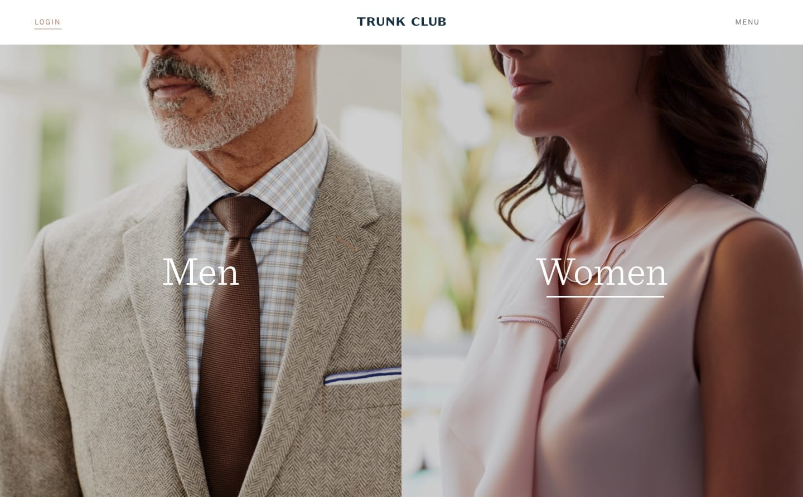
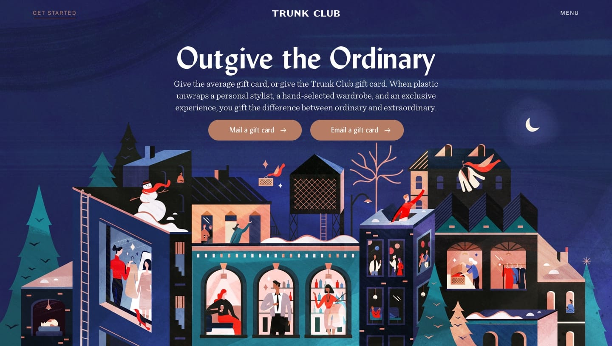
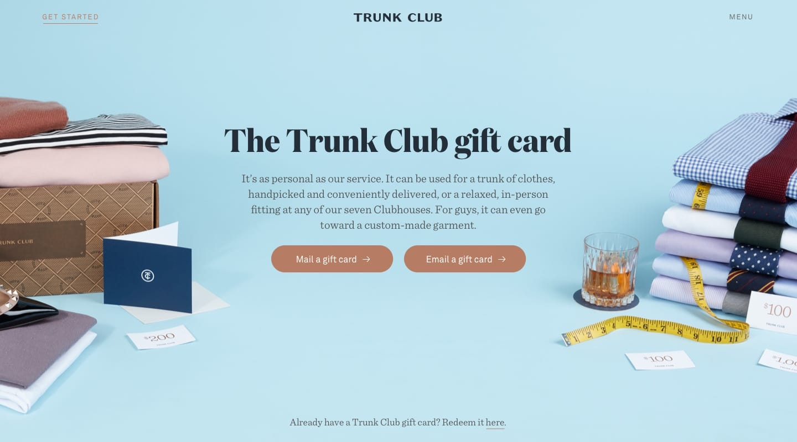

At Trunk Club, I was brought on as the sole marketing Front End Developer. In my tenure at Trunk Club, I worked primarily with two designers to rebrand and overhaul the entirety of the public-facing marketing site. This included the homepage as well as the supporting pages—these pages included but were not limited to: a refreshed gift card purchasing flow, dedicated pages for men and women respectively, and a press hub with similar functionality to a blog. I also coded a broad array of reusable templates for email campaigns that followed the new branding language.
Marketing Site Redesign
When Trunk Club was first started, it was strictly a men’s outfitting service, and the marketing site reflected this. When the women’s service was kicked off in 2015, the homepage continued to link to the primarily male-focused landing page, with a green pop-down banner linking off to the women’s landing page.

This was not ideal as there was not significant attention drawn to the women’s experience.
One of the first tasks I was given was developing a gender split homepage that would call equal attention to both the men’s and women’s service. Working closely with a designer to quickly mock up a solution, we landed on this final design:

The gender split homepage
At this point, the men’s and women’s pages still had different headers and footers, and overall spoke completely different branding languages. The gender split set a precedent for the new direction we were taking the brand and visuals in and further worked to separate out the experience for men and women, drawing more attention to the fact that we were no longer a business catered to just men.
The branding throughout the site was inconsistent, not just on the men’s and women’s pages, so the designers and I collectively worked to unify pages by designing and developing a single global header and footer to be used on every new page. Working first through designs of the main homepages (i.e., men’s and women’s), we made our way through the subpages one-by-one and reimagined each experience individually, following the branding guidelines set by the homepages.
For a more detailed look at the design case study:
In terms of development, I built pages individually using Statamic, a CMS that Trunk Club has been using since the last redesign. Statamic utilizes a mixture of HTML partials, layouts, and templates to build the structure of each page. We use Gulp to process SASS and CoffeeScript into vanilla CSS and JavaScript, respectively.
Building pages with Statamic allowed for flexibility in A/B testing. Using templates I built out previously and making slight changes in the language and ordering of modules allowed us to rapidly test during the initial stages of the redesign’s launch.
Following the gender split and men’s and women’s pages, I worked through our clubhouse locations pages, custom page, FAQ page, about page, and more. I also had the opportunity to design and develop all of the microinteractions and animations used throughout the site. For a detailed look at the live pages, you can view the site here:
Coupled with the rebranding of the marketing site was a redesign of our gift card purchasing flow. Previously the gift card flow was linked to the members site although in the site map it was more closely linked to the public-facing site. In order to adjust for this discrepancy, I was charged with developing a new purchasing flow that would live on the public site.
This project was a large undertaking as it was the first time I was joining front-end with a back-end API. The flow also presented the new challenge of writing front-end validation. I opted to hand-code the validation, but as the project wore on, it proved to be slightly more time-consuming than I initially anticipated, and in hindsight using an existing library could have yielded more efficient results. With that being said, I was satisfied with the final results.
The initial redesign was launched around the winter holidays, and was skinned with a holiday theme. This allowed me a unique opportunity to use HTML5 canvas and a snow animation. (For a code sample of the holiday page, please email me.)

Holiday skin for the updated Trunk Club gift cards flowSnow sample .gif

Current skinning for Trunk Club gifts page
The most recent project I worked on is the press hub for Trunk Club. At its heart it functions as a microsite / blog for public relations releases and press statements. It also includes historical information about the company, bios for members of the leadership team, as well as a library of downloadable, high-resolution resources for news corporations to pull from for articles.
The hub also included an update to the CMS that allows for any admin to easily swap out assets on the resources page or post new press releases, which would be reflected in each section that they’re referenced in.